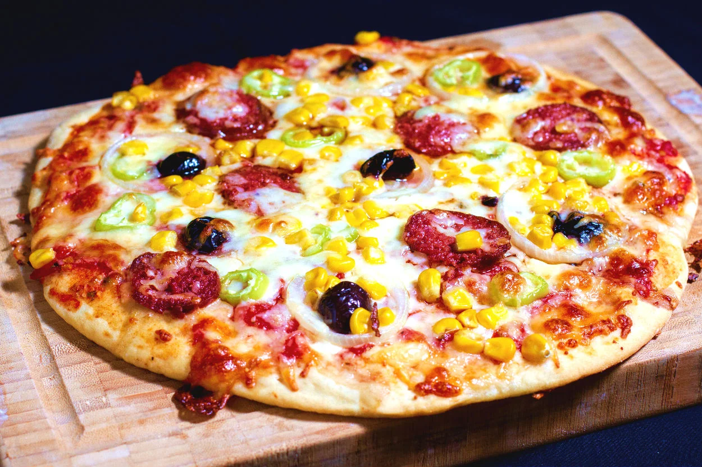

Ingredients
- 1 pizza dough (store-bought or homemade)
- 1/2 cup pizza sauce
- 2 cups shredded mozzarella cheese
- Assorted toppings of your choice:
- - Pepperoni slices
- - Sliced bell peppers
- - Sliced mushrooms
- - Sliced onions
- - Cooked and crumbled sausage
- - Sliced olives
- - Fresh basil leaves
- - Grated Parmesan cheese
- - Red pepper flakes (optional)
Instructions
- Preheat your oven to the highest temperature (usually around 475°F or 245°C).
- If using a pizza stone, place it in the oven while preheating.
- Roll out the pizza dough on a lightly floured surface to your desired thickness.
- Transfer the rolled-out dough to a pizza peel or a baking sheet lined with parchment paper.
- Spread the pizza sauce evenly over the dough, leaving a small border around the edges.
- Sprinkle the shredded mozzarella cheese on top of the sauce.
- Add your preferred toppings, arranging them evenly over the cheese.
- If using a pizza stone, carefully slide the pizza onto the preheated stone in the oven.
- If using a baking sheet, simply place the baking sheet in the oven.
- Bake the pizza for about 12-15 minutes or until the crust is golden brown and the cheese is bubbly and slightly browned.
- Remove the pizza from the oven and let it cool for a minute.
- Sprinkle some grated Parmesan cheese and red pepper flakes (if desired) over the pizza.
- Slice and serve the delicious homemade Pizza hot!